A Village of Grace · Thiruvarur District · Tamil Nadu
Nestled in the fertile delta of the Cauvery, Poongulam is a village where ancient temples stand among golden paddy fields, and generations of tradition live on in every harvest and festival.
Poongulam — meaning "Lake of Flowers" in Tamil — is a serene village located near Nannilam in the Thiruvarur district of Tamil Nadu. Sitting in the lush Cauvery delta, it is surrounded by some of the region's most sacred sites: the ancient Vanchinadha Swamy temple of Srivanjiyam just 2 km away, the celebrated Koothanur Maha Saraswathi temple 10 km away, and the great temple city of Kumbakonam 30 km away.
"Where the paddy waves in the breeze and temple bells echo across the fields — that is Poongulam."
The village has a deep-rooted connection to the Chola era, with its temples believed to date back over a thousand years. Its pond — the very namesake of the village — has long served as a lifeline for irrigation and as a spiritual gathering point during festivals. The cultural fabric of Poongulam is woven with Carnatic music, classical dance, and the annual chariot festivals that bring the community together.
The primary crop of Poongulam, harvested twice a year. The fertile Cauvery delta soil yields rich harvests of Samba, Kuruvai, and Thaladi varieties celebrated for their quality across the region.
Rows of swaying coconut palms line the village periphery, providing food and economic sustenance for many families. Fresh coconuts from Poongulam are sold in local markets and used widely in traditional cooking and daily life.
Grown in home gardens and small farms, bananas from Poongulam are used in temple offerings, local markets, and traditional cooking. The Nendran and Rasthali varieties are particularly prized.
The village is blessed with access to the Grand Anicut canal system, an engineering marvel dating from the Chola period, ensuring year-round water supply to the farms of Poongulam.
Lotus flowers bloom abundantly in and around Poongulam and are regularly sent to the nearby temples — including the Srivanjiyam Vanchinadha Swamy temple — as sacred offerings. Jasmine and marigold are also grown, closely tied to the village's daily spiritual life and local markets.
Cotton is one of the principal crops of Poongulam, grown across sizeable stretches of farmland. The Cauvery delta's well-irrigated, black soil conditions are well-suited to cotton cultivation, making it a key source of income for farming families alongside paddy.
Many households rear cattle, contributing to a thriving small-scale dairy tradition. Native breeds like Kangayam and Pulikulam are treasured for their hardiness and milk yield.
Alongside food crops, Poongulam's farmlands are home to a rich mix of commercially and ecologically valuable trees — intercropped with paddy and cultivated on bunds and field margins.
Fast-growing and widely planted along field bunds and roadsides. Eucalyptus provides timber for construction, firewood for households, and pulpwood for paper mills in the region — a reliable cash crop with a short rotation cycle.
One of the most prized timber trees in Tamil Nadu. Teak grown in and around Poongulam is valued for its durability and fine grain, used in furniture, doors, and boat-building. The long-term investment of teak planting has benefited several farming families.
Bamboo groves are found across the village, serving multiple purposes — scaffolding, baskets, fencing, and traditional household tools. Bamboo is also a key material for local artisans and grows rapidly with minimal maintenance.
Among the most valuable trees grown in the region, sandalwood is cultivated carefully by a few farmers in Poongulam. The heartwood commands premium prices for incense, oils, and religious use. Its slow growth makes it a long-term but highly rewarding crop.
Palm oil cultivation is a growing addition to Poongulam's agroforestry landscape. Oil palm trees thrive in the humid Cauvery delta climate and yield high quantities of palm oil used in cooking, cosmetics, and industry — providing farmers a perennial, high-value income crop with relatively low maintenance once established.
Poongulam offers visitors an unhurried, authentic Tamil Nadu experience — ancient temple trails, golden paddy walks, canal-side mornings, and the warmth of a village that still lives by the rhythm of nature and tradition.
Walk the four ancient temples of Poongulam — Murugan, Amman, Shiva, and Perumal — with a knowledgeable village guide. Explore centuries-old stone carvings, inscriptions, and listen to the stories each temple holds.
Stroll through glimmering green paddy fields as far as the eye can see. Visit during the Samba harvest season (Nov–Jan) to witness the entire village engaged in a 1000-year-old tradition of hand-harvesting.
Spend a morning with a local family — learn kolam art, participate in traditional cooking, and witness the daily rhythms of a Tamil village from the inside. Includes a traditional lunch.
Walk along the Grand Anicut canal that runs near Poongulam — a living remnant of Chola hydraulic engineering. Watch farmers channel water to fields in the same way their ancestors did centuries ago.
Learn the sacred art of Kolam (rice-flour rangoli) from a village artisan. Each pattern tells a story — of prosperity, of the seasons, of the gods. Take your own design home as a souvenir.
Capture the magic of Poongulam — temple gopurams at golden hour, cattle returning at dusk, women carrying jasmine garlands, and elders sitting beneath banyan trees. A photographer's paradise.
Poongulam sits at the heart of one of Tamil Nadu's richest temple corridors. Within a short drive you can visit some of the most revered sacred sites and historic towns in the Cauvery delta.
The most accessible sacred site from Poongulam, Srivanjiyam (also written Srivanchiyam) is home to the ancient Vanchinadha Swamy temple dedicated to Lord Shiva. Built on the banks of the River Mudikondan, this is one of the Paadal Petra Shiva Sthalangal — the 276 Shiva temples glorified in the Thevaram hymns of the Nayanmars.
What makes this temple truly unique is its separate sannidhi (shrine) for Lord Yamadharmaraja — one of the very few temples in Tamil Nadu with this distinction. The temple is also known as a Poorva Jenma Pava Vimochana Sthalam, meaning a place where the sins of past lives are washed away.
One of the most celebrated Saraswathi temples in all of Tamil Nadu, the Koothanur Maha Saraswathi temple draws lakhs of devotees every year — particularly students seeking blessings before exams and at the start of new academic journeys.
This is also considered the Dakshina Thiruveni Sangamam — the southern confluence of the sacred rivers Ganga, Yamuna, and Saraswathi. The presiding deity is seen in a seated posture, radiating grace and wisdom. During Navarathri and Vijayadasami, the temple becomes a great spectacle of devotion.
The district headquarters of Thiruvarur is home to the magnificent Arulmigu Thyagarajaswamy Temple — one of the most sacred Shiva temples in Tamil Nadu. The presiding deity Lord Thyagaraja (also called Vanmeekanathar) and Goddess Nilotpalambigai have been glorified in the Thevaram hymns of the Nayanmars, making this a Paadal Petra Sthalangal.
This temple is one of the Panchasabhas — the five cosmic dance halls of Shiva — known as the Nithya Sabha. It is also one of the Saptha Vidanga Sthalangal. The world's largest temple chariot (ther) is housed here and drawn during the grand Brahmotsavam festival, drawing lakhs of devotees from across Tamil Nadu.
Known as the "City of Temples", Kumbakonam is home to over 188 temples within its municipal limits and is one of the most sacred towns in Tamil Nadu. Located ~30 km from Poongulam, it is an unmissable destination for anyone in the region.
Key highlights include the Adi Kumbeswarar Temple, Sarangapani Temple, Ramaswamy Temple, and the legendary Mahamaham tank — where a sacred festival held every 12 years draws millions of pilgrims. Kumbakonam is also famous for its silk sarees, bronze castings, and traditional sweets.
A glimpse of everyday life, golden harvests, ancient temples, and the natural beauty that makes Poongulam unlike any other village in the Cauvery delta.
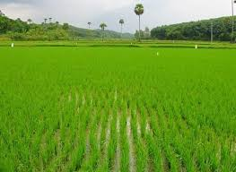
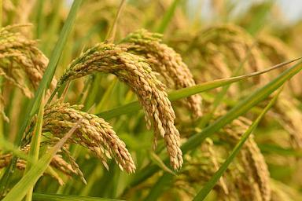
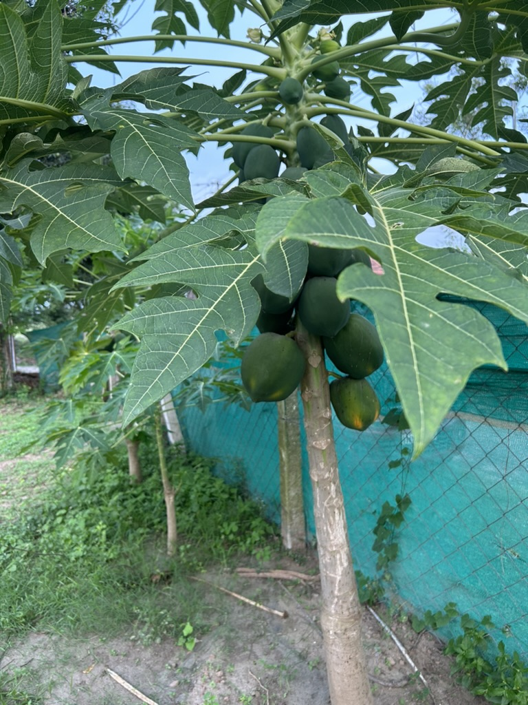
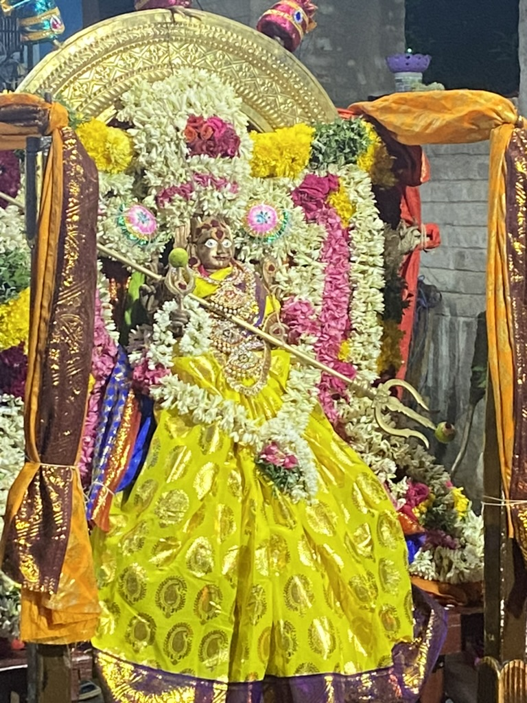
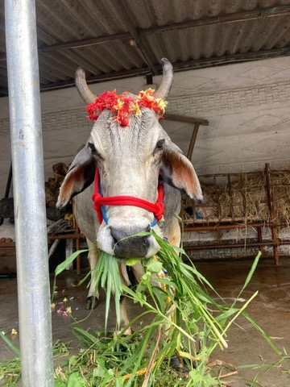
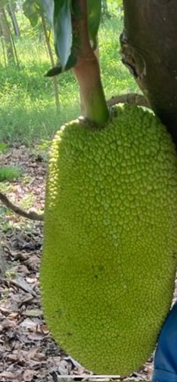
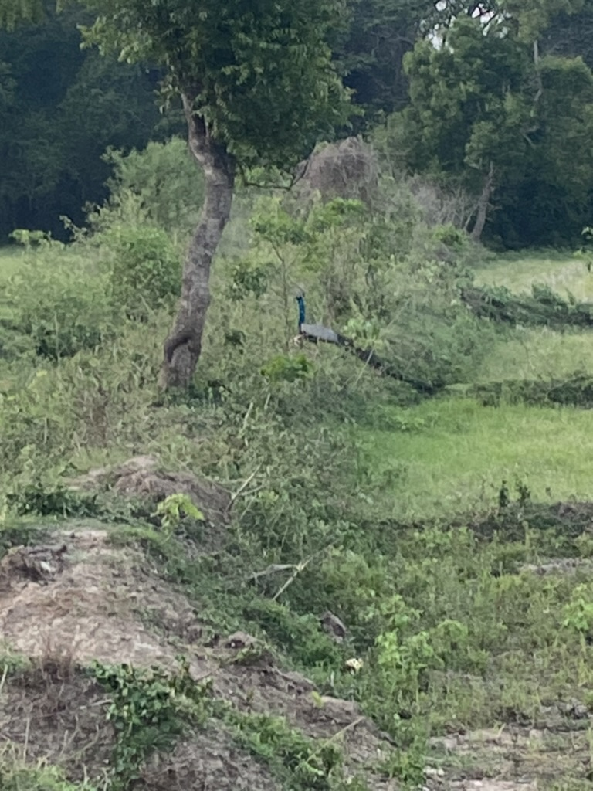
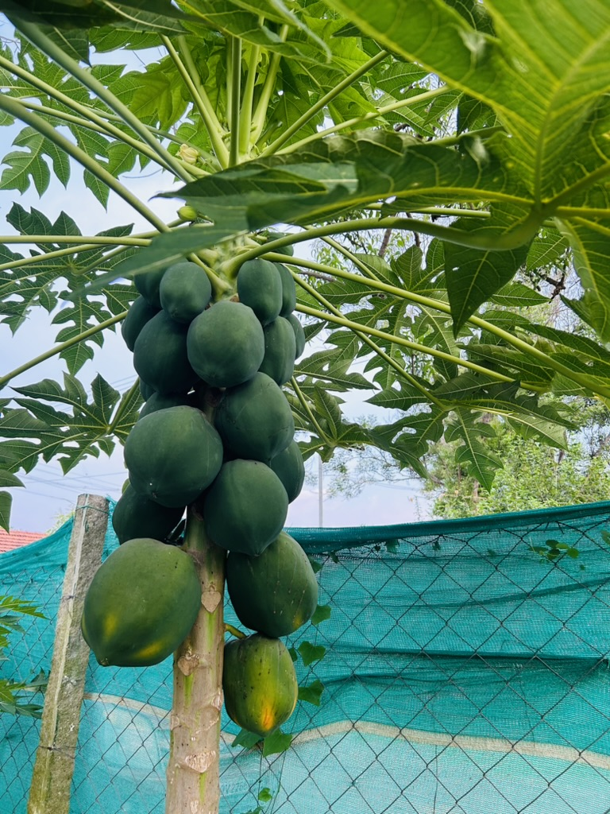
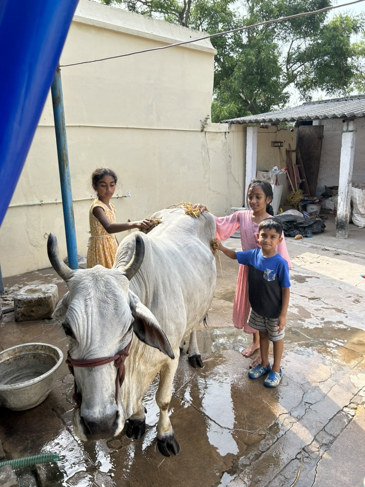
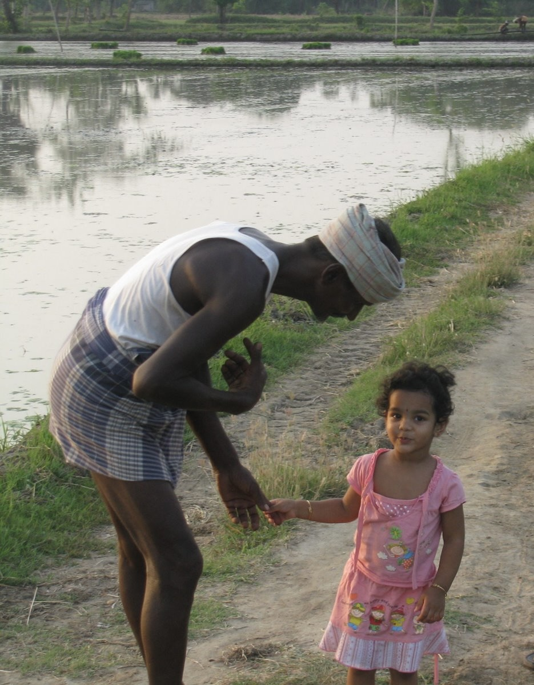
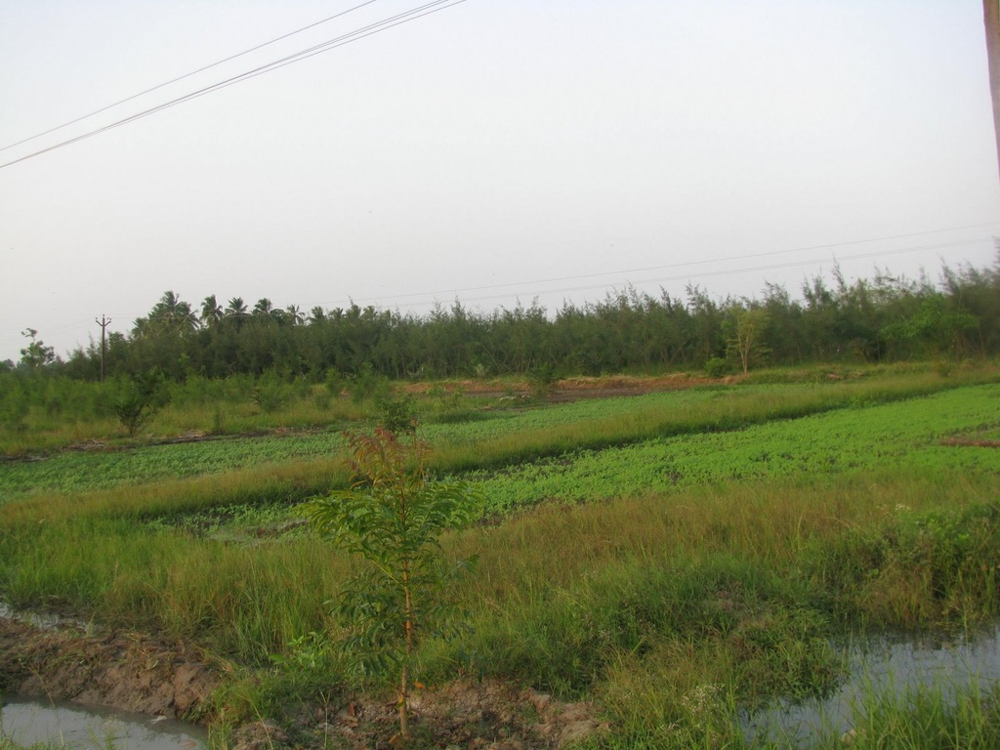
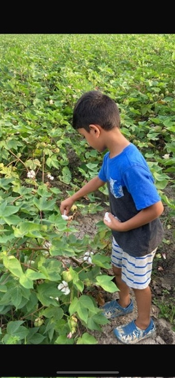
photo-01.jpg through photo-12.jpg into the photos/ folder next to this file — they will appear here automatically. See photos/README.txt for guidance.
Poongulam is a village that has given so much — to its people, to its culture, to Tamil Nadu's heritage. Yet like many rural communities, it faces challenges: deteriorating school infrastructure, water access, and temple restoration.
Your donation — no matter how small — goes directly to real, on-the-ground projects managed transparently by the village panchayat. Every rupee is accounted for and shared with the community.
100% of your contribution reaches Poongulam village directly.
Poongulam is home to three standing temples — Mariamman, Agastheeswarar, and Ayyanar — that have been the spiritual backbone of village life for generations. A new Vishnu temple is currently under construction, soon to become the fourth sacred site in the village.
The village goddess temple, where Mariamman is worshipped as the protector of Poongulam. The Navarathri celebrations here are a nine-night spectacle of devotion, music, and community bonding that unites every household.
Dedicated to Lord Shiva under the name Agastheeswarar. The Cauvery delta region has a rich Shiva temple tradition, and this temple is a spiritual anchor for the village. Maha Shivaratri is observed here with a grand overnight puja attended by all.
Ayyanar is the guardian deity of the village and its farmlands, worshipped at the boundary of the settlement. The terracotta horses and votive figures surrounding this temple are a striking example of Tamil folk art and tradition.
A new temple dedicated to Lord Vishnu is currently under construction in Poongulam — a testament to the community's ongoing devotion and collective effort. When complete, it will become the fourth sacred site in the village.
The grandest Shiva temple in the region — and the spiritual heart of Thiruvarur district.
One of Tamil Nadu's most magnificent Shiva temples, the Thyagarajaswamy temple at Thiruvarur (~17 km from Poongulam) is a Paadal Petra Sthalangal glorified in the Thevaram hymns. The presiding deity is Lord Thyagaraja, with Goddess Nilotpalambigai. This temple is one of the celebrated Panchasabhas — the five cosmic dance halls of Shiva — known here as the Nithya Sabha. It is also one of the Saptha Vidanga Sthalangal. The temple houses the world's largest temple chariot (ther), drawn with great ceremony during the annual Brahmotsavam festival, attracting lakhs of devotees from across India. The main deity Mahalinga is believed to be swayambhu — self-manifested.
The people of Poongulam are warm, resilient, and deeply rooted in their traditions. The village is a close-knit community where every household knows its neighbour, and collective celebrations — from weddings to temple festivals — are grand, inclusive affairs attended by all.
The village is home to several traditional communities including agriculturists, weavers, potters, and priests who have practised their craft for generations. The local panchayat plays an active role in village welfare, infrastructure development, and maintaining cultural traditions.
Women of Poongulam are known for their intricate kolam art and expertise in traditional cooking — particularly the famed Pongal and Kuzhambu recipes passed down through generations. The village also has a vibrant youth community that participates in sports, education, and cultural programs.
The village's primary school provides free education to children from Poongulam and surrounding hamlets. Dedicated teachers ensure quality education in Tamil medium from Classes 1–5.
Classes 1–5Students continue at the nearby Nannilam Middle School, a short bus ride away, offering education up to Class 8 with science and math labs.
Classes 6–8Poongulam students access government and aided Higher Secondary Schools in Nannilam and Thiruvarur for Classes 9–12, with many going on to colleges in Thiruvarur and beyond.
Classes 9–12A small community reading room maintained by the village panchayat stocks newspapers, Tamil literature, and educational books. It serves as an informal study hall for students.
Community ResourceThe village Anganwadi provides early childhood care, nutrition, and pre-school education for children under 6. It is a lifeline for working mothers in the village.
Early ChildhoodYouth of Poongulam increasingly access digital education platforms. Several students have gone on to engineering and medical colleges, becoming proud ambassadors of the village.
Growing Initiative